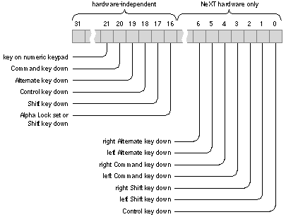

/NextLibrary/Documentation/NextDev/ReleaseNotes/WindowServer.rtf
/NextLibrary/Documentation/NextDev/ReleaseNotes/WindowServer.rtf
 /NextLibrary/Documentation/NextDev/ReleaseNotes/AppKit.rtf
/NextLibrary/Documentation/NextDev/ReleaseNotes/AppKit.rtf
Applications on the NeXT computer respond to four types of input:
Release 3.3 Copyright ©1995 by NeXT Computer, Inc. All Rights Reserved.
| 5 | Events |
| Changes made for the current release of NeXTstep affect the information presented in this chapter. For details see:
Applications on the NeXT computer respond to four types of input: |
| Events. The direct or indirect reports of a user's actions--key-down and mouse-up events, for example. | ||
| Timed entries. Functions that are executed at a given frequency. | ||
| Data received at a Mach port. | ||
| Data waiting at a file descriptor. |
| Of these four, events are by far the most prevalent and important. In fact, the heart of an application is its event loop, the routine that repeatedly checks for the arrival of new events. It's only when the application is running the event loop that it can receive input from the three other sources. Because these four types of input are so closely interrelated, they're discussed together in this chapter.
The chapter begins with an examination of events: their types, components, and how they're distributed to an application. It then discusses the other types of input and how an application coordinates its response to them. Since most of an application's event processing is done through the Application Kit objects it includes, the close look at events that this chapter provides may at times contain more detail that you'll actually need to get started writing an application. The next two chapters, "Program Structure" and "Program Dynamics," introduce the Application Kit and its event-handling system. You can either turn directly to those chapters and refer back to this one for background information as needed, or you can read through this chapter first. |
| Event Basics |
| Applications on the NeXT computer are driven by the user's actions on the keyboard and mouse. The Window Server treats each user action as an event, which it associates with a window and reports to the application that created the window. For most events, the Window Server sends the event to the application only if the window's event mask permits it. The mask has a different bit set for each type of event the application is interested in.
Pertinent information about each event--such as which character was typed and where the mouse was located--is collected in an event record. When an event is reported to an application, its record is stored in a C structure and made available to the application through the Application Kit. Since an application and the Window Server are separate processes that execute asynchronously, a system is needed to coordinate their communication. For example, an application may be involved in a long computation and momentarily unable to process the event records that the Window Server sends. So that no information is lost, as event records are received in the application, they're temporarily placed in storage called the event queue. When the application is ready to process an event, it takes an event record from the queue. Only when the application checks the queue can it also check for timed entries or data at a Mach port or in a file. Most events follow the same path: from the Window Server to the application's event queue, and from there, to the objects and functions of the application. However, the Application Kit can create an event record and insert it into the event queue for distribution or send it directly to its destination. In some cases, it's more efficient or convenient for the Application Kit to create an event record itself. The Kit can then either insert the record in the event queue for distribution or send it directly to its destination. If an event follows one of these alternate pathways, it's pointed out in the discussion that follows. |
| Types of Events |
| The different types of events an application receives can be grouped in these seven categories: |
| Keyboard events | ||
| Mouse events | ||
| Timer events | ||
| Cursor-update events | ||
| Kit-defined events | ||
| System-defined events | ||
| Application-defined events |
| As described in the following sections, some of these categories comprise discrete events. For example, mouse-down, mouse-up, and mouse-dragged events are discrete types of the mouse events category. Some categories contain a single compound event whose event record contains information specifying which of several possible actions caused the event. The distinction between discrete and compound events will become clear from the examination of the event record later in this chapter.
Keyboard Events Among the most common events sent to an application are these direct reports of the user's keyboard actions: |
| A key-down event when the user generates a character by pressing a key | ||
| A key-up event when the key is released | ||
| A flags-changed event when the user presses or releases the Alternate, Shift, Control, or Command key, or turns Alpha Lock on or off |
| Of these, key-down events are the most useful to the application. Key-up events are less used since they follow almost automatically when there has been a key-down event.
Because the event record for every event type includes flags that indicate the state of Alpha Lock, Alternate, Shift, Control, and Command, applications normally don't need to receive flags-changed events; they're useful only for applications that have to keep track of the state of these keys continuously. The default event mask for a new window doesn't allow flags-changed events.
Mouse Events Mouse events are generated by changes in the state of the mouse buttons and by changes in the position of the mouse cursor on the screen. Along with keyboard events, they're among the most useful to applications. This category consists of: |
| Two sets of mouse-down and mouse-up events, one for the left mouse button and one for the right. "Mouse-down" means the user pressed the button; "mouse-up" means the button was released. If the mouse has just one button, only left mouse events are generated. | ||
| Two types of mouse-dragged events--one for when the mouse is moved with its left mouse button down, or with both buttons down, and one for when it's moved with just the right button down. A mouse with a single button generates only left mouse-dragged events. As the mouse is moved with a button down, a series of mouse-dragged events is produced. The series is always preceded by a mouse-down event and followed by a mouse-up event. | ||
| A mouse-moved event when the user moves the mouse without holding down either mouse button. | ||
| Mouse-entered and mouse-exited events if the application has asked the Window Server to set a tracking rectangle in a window. These events report whether the cursor has entered the rectangle or left it. For each rectangle, you can specify whether these events should be generated only when one or another (or both) of the mouse buttons is being held down. A window can have any number of tracking rectangles; the event record identifies which rectangle was entered or exited. For more information on setting a tracking rectangle, see "Mouse-Exited and Mouse-Entered Events" in Chapter 7, "Program Dynamics." |
| Mouse-dragged and mouse-moved events are generated repeatedly as long as the user keeps moving the mouse. If the user holds the mouse stationary, neither event is generated until it moves again. Nevertheless, mouse-dragged and mouse-moved events are different from all other events in that they report continuous rather than discrete user actions. They therefore place a heavy load on the system; applications should ask for them only when necessary. The default event mask for a newly created window doesn't allow either of these two mouse events. You need to reset the mask when you're ready to respond to these events and set it back again when you're done. See "Modal Event Loops" in Chapter 7 for an example of how this can be done.
Note: The use of the terms "left" and "right" above is a matter of convention (see Chapter 2, "NeXT User Interface" for more information). Unless the mouse buttons have been differentiated using the Preferences program, either mouse button generates the "left" version of these mouse events. If, on the other hand, a user unlinks the two buttons, the primary mouse button (either left or right) generates "left" mouse events and the other button generates "right" mouse events.
Timer Events A timer event notifies an application that a certain time interval has elapsed. An application can register that it wants timer events and that they should be placed in its event queue at a certain frequency. When the application no longer needs them, the flow of timer events can be turned off. An application can't have more than one stream of timer events active at a time. These events are a service of the routines that place events in an application's event queue and so aren't created by the Window Server. Timer events provide a way for applications to interleave two activities. For example, consider automatic scrolling. As the user drags the mouse outside a window, the application checks for mouse-dragged events and sends a message to select and scroll the contents of the window. The number of lines scrolled at a time depends on the distance the mouse is dragged way from the top or bottom edges of the window: The farther it's dragged, the greater the number of lines scrolled at a time. However, the sending of scrolling messages can't be contingent on the receipt of mouse-dragged events. If the user stops moving the mouse but continues to hold the mouse button down, the flow of mouse-dragged events stops although the window should continue scrolling. To solve this problem, the application can specify that, while it's checking for mouse-dragged events (whether it finds one or not), it will receive timer events at a given interval. Each time it receives a timer event, it can send a message to the window to scroll.
Cursor-Update Events A cursor-update event informs an application that the cursor has crossed the boundary of a predefined rectangular area within a window. The application can then respond by updating the cursor's shape. For example, the Edit application changes the cursor from an arrow to an I-beam whenever the cursor is within the text area of the window. There may be one or more rectangles defined at a time, and the rectangles can overlap partially or fully. A different cursor can be defined for each rectangle. Cursor-update events may seem closely related to mouse-entered and mouse-exited events. In fact, the Application Kit converts specially marked mouse-entered and mouse-exited events into cursor-update events and then sends them on to the application. Consequently, these events are only available to applications based on the Kit. The Kit also provides the facilities for registering a cursor and assigning it to a particular area of a window. Once your application has assigned a cursor to a specific area, the Application Kit does the rest. Kit routines check for incoming cursor-update events and update the cursor's image accordingly. In doing so, the Kit consumes the cursor-update events, making it unnecessary for your code to handle them.
Kit-Defined Events Kit-defined events contain information that the Application Kit uses to manage your application. Since the Kit is designed to respond to events of this type, the code you write will rarely need to take them into account. A kit-defined event is a compound event, a single event type that serves as a vehicle for various subevents. By examining the event record of a kit-defined event, an application can determine which of several kit-defined subevents has occurred. These subevents report changes to a window or to the status of the application that created the window. Kit-defined subevents are: |
| A window-moved subevent when the user has dragged the window to another location on the screen. Most applications won't care exactly where a user moves a window and won't need to respond to this subevent. The Application Kit uses it to keep track of where windows are on the screen. | ||
| A window-resized subevent when the application has the Window Server resize a window in response to the user's actions. The subevent reports the window's new dimensions to the application. Although the Window Server resizes the window, it doesn't generate the window-resized subevent. Instead, the Application Kit creates the subevent and sends it on to its destination. | ||
| A window-exposed subevent when a nonretained window that was covered or positioned off-screen becomes exposed. This subevent lets the application know which part of the window needs to be redrawn. Window-exposed subevents also occur for retained windows when instance drawing in them is exposed. (See "Instance Drawing," in Chapter 4, "Drawing.") | ||
| An application-activated subevent when an inactive application is activated. This subevent alerts the application to display the markings on its main and key windows and to redisplay any panels that it hid when it became inactive. | ||
| An application-deactivated subevent to cause a previously active application to become inactive. The application receiving an application-deactivated subevent makes its panels disappear and relinquishes the main and key windows. |
| System-Defined Events
A system-defined event is also a compound event, serving to group subevents which report activities of system-wide importance. As with kit-defined events, the Application Kit responds to system-defined events, making it unnecessary in most cases for you to handle these events directly. Currently, there's only one subevent, the power-off subevent, of the system-defined event. This subevent is generated when the user turns the power off by pressing the Power key on the keyboard. Before the power actually goes off, applications have time to notify the user of files not saved and do other cleanup if necessary. This subevent is not generated by power failures or any other means that might be used to turn the computer off.
Application-Defined Events An application-defined event is a compound event with no predefined subevent types. An application can define as many subevent types as it needs. The event record contains several fields that the application can use to give specific content to the subevent. An application might make use of these events in a number of ways. From the keyboard and mouse events it receives, it could recognize the user's intentions and generate an event record for the appropriate application-defined subevent. It could post the event record to its queue and then process the record as it does those it receives from the Window Server. (See "The Event Queue" at the end of this chapter and DPSPostEvent() in NeXTstep Reference, Volume 2.) |
| The Event Record |
| Information about each event is stored in an event record. In some cases, the Application Kit extracts information out of the event record for you; usually, you'll need to access it directly. When the application sees it, the event record has the structure shown below. This structure is defined, along with event-related constants and macros, in the NeXT header file dpsclient/event.h. |
 typedef struct _NXEvent {
typedef struct _NXEvent {
 int type /* event type */
int type /* event type */
 NXPoint location; /* mouse location */
NXPoint location; /* mouse location */
 long time; /* time since startup */
long time; /* time since startup */
 int flags; /* key state flags */
int flags; /* key state flags */
 unsigned int window; /* window number */
unsigned int window; /* window number */
 NXEventData data; /* type-specific information */
NXEventData data; /* type-specific information */
 DPSContext ctxt; /* context number */
DPSContext ctxt; /* context number */
 } NXEvent;
} NXEvent;
| Here's what the event record contains in its various components (called "fields" or "members" in standard C terminology): |
| Component | Content | |
| type | The event type--whether it's a mouse-down, key-up, or kit-defined event, for example. (See the list in the next section.) | |
| location | The mouse location--its x and y coordinates in the window's base coordinate system--immediately following the event, except for two subevents: |
| For window-moved subevents, it's the lower left corner of the window after the move, in screen coordinates. (This point is the origin of the base coordinate system.) | ||
| For window-exposed subevents, it's the lower left corner of the rectangle to be redrawn, in base coordinates. |
| time | The time that the event occurred relative to system startup. The unit of time is hardware-dependent; on the NeXT computer, it's measured as the number of vertical retrace intervals (1/68 seconds) since the startup of the Window Server. | |
| flags | Flags indicating whether the mouse buttons or modifier keys like Shift and Command were down when the event occurred, or whether a key that was pressed was on the numeric keypad (see "Event Flags" below). | |
| window | In most cases, the window number of the window associated with the event. For left mouse-down, left mouse-up, and left mouse-dragged events, it's the window that the cursor was over when the mouse button was pressed. For right mouse events that occur over a window in the active application, it's also the window that the cursor was over when the mouse button was pressed. However, for right mouse events that occur elsewhere, it's the number of the window that last received a left mouse-down event. (The Application Kit uses this information to bring up the application's main menu in response to a right mouse-down event.) For mouse-moved events, it's the number of the topmost window that accepts this type of event. | |
| In the case of application-activated and application-deactivated subevents, this field identifies the application that's being deactivated (for application-activated subevents) or the application that's being activated (for application-deactivated subevents). | ||
| data | Type-specific information (see "Type-Specific Event Data" below). | |
| ctxt | A number identifying the PostScript context associated with this event. Since an application typically creates only one context in the Window Server, the content of this field won't be of interest. This field is provided for applications that establish multiple PostScript contexts and that must know which context an event arrived from. (See "The Event Queue" at the end of this chapter and Chapter 4 for more information about PostScript contexts.) |
| Event Types
The event type is indicated by one of these symbolic constants: |
| Constant | Event Type | |
| NX_KEYUP | Key-up |
| NX_FLAGSCHANGED | Flags-changed | |
| NX_LMOUSEDOWN | Mouse-down, left or only mouse button | |
| NX_LMOUSEUP | Mouse-up, left or only mouse button | |
| NX_RMOUSEDOWN | Mouse-down, right mouse button | |
| NX_RMOUSEUP | Mouse-up, right mouse button | |
| NX_MOUSEMOVED | Mouse-moved | |
| NX_LMOUSEDRAGGED | Mouse-dragged, left or only mouse button | |
| NX_RMOUSEDRAGGED | Mouse-dragged, right mouse button | |
| NX_MOUSEENTERED | Mouse-entered | |
| NX_MOUSEEXITED | Mouse-exited |
| NX_TIMER | Timer |
| NX_CURSORUPDATE | Cursor-update | |
| NX_KITDEFINED | Kit-defined | |
| NX_SYSDEFINED | System-defined | |
| NX_APPDEFINED | Application-defined |
| As a convenience, these synonyms for left mouse events are provided for your use: |
| Constant | Equivalent to | |
| NX_MOUSEUP | NX_LMOUSEUP |
| NX_MOUSEDRAGGED | NX_LMOUSEDRAGGED |
| Event Flags
The flags component of the event record contains the flags illustrated in Figure 5-1. Each flag is 1 in the situation stated in the diagram, and 0 otherwise. Bits that aren't labeled in the diagram are reserved for future use. |
|  |
| Figure 5-1. Event Flags
Only the flags in the high-order half of the flags integer are hardware-independent, that is, guaranteed to have the indicated meaning for any keyboard or mouse. The hardware-dependent flags (in the low-order half) should be used only when your application must distinguish between the left and right Alternate, Control, or Command keys. If you use the hardware-dependent flags, your application will require changes before it will work on later versions of the NeXT computer keyboard or with NeXT software running on other hardware systems. The low-order event flags imply certain high-order flags. If either of the low-order flags corresponding to Alternate is set, the high-order Alternate flag is also set. Similarly, if either low-order flag referring to Command or Shift is set, the corresponding high-order bit is set. If the low-order Control flag is set, so too will be the high-order Control flag. Note: The Command and Alternate keys may be labeled differently on other keyboards, and you may set Alpha Lock differently. Flags referring to keys entirely missing from other keyboards will always be 0 when those keyboards are used. The following constants are provided as masks for accessing these flags. Hardware-independent: |
| Mask | Event Flag | |
| NeXT hardware only: |
| Mask | Event Flag | |
| NX_NEXTLSHIFTKEYMASK | 1 if left Shift key is down | |
| NX_NEXTRSHIFTKEYMASK | 1 if right Shift key is down | |
| NX_NEXTLCMDKEYMASK | 1 if left Command key is down | |
| NX_NEXTRCMDKEYMASK | 1 if right Command key is down | |
| NX_NEXTLALTKEYMASK | 1 if left Alternate key is down | |
| NX_NEXTRALTKEYMASK | 1 if right Alternate key is down |
| For example, the following code tests whether Alternate was pressed at the time of the last event; theEvent is a pointer to the event record of the current event. |
 if ( theEvent->flags & NX_ALTERNATEMASK )
if ( theEvent->flags & NX_ALTERNATEMASK )
 doSomething();
doSomething();
 else
else
 doSomethingElse();
doSomethingElse();
| Since the state of Alternate, Alpha Lock, Shift, and Control is reflected in the character information returned for a keyboard event (as described below), there's normally no need to check flags for them.
Type-Specific Event Data The data component of the event record is a C union that contains different information depending on the type of event: |
 typedef union {
typedef union {
 /* For mouse-down and mouse-up events: */
/* For mouse-down and mouse-up events: */
 struct {
struct {
 short reserved;
short reserved;
 short eventNum; /* event number */
short eventNum; /* event number */
 int click; /* single, double, triple, etc.*/
int click; /* single, double, triple, etc.*/
 int unused;
int unused;
 } mouse;
} mouse;
 /* For key-down and key-up events: */
/* For key-down and key-up events: */
 struct {
struct {
 short reserved;
short reserved;
 short repeat; /* key repeat indicator */
short repeat; /* key repeat indicator */
 unsigned short charSet; /* character set */
unsigned short charSet; /* character set */
 unsigned short charCode; /* character code */
unsigned short charCode; /* character code */
 unsigned short keyCode; /* key code */
unsigned short keyCode; /* key code */
 short keyData; /* hardware-dependent data */
short keyData; /* hardware-dependent data */
 } key;
} key;
 /* For mouse-entered and mouse-exited events: */
/* For mouse-entered and mouse-exited events: */
 struct {
struct {
 short reserved;
short reserved;
 short eventNum; /* mouse-down event number */
short eventNum; /* mouse-down event number */
 int trackingNum; /* tracking rectangle number */
int trackingNum; /* tracking rectangle number */
 int userData; /* programmer-determined data */
int userData; /* programmer-determined data */
 } tracking;
} tracking;
 /* For kit-defined, sys-defined, and app-defined events */
/* For kit-defined, sys-defined, and app-defined events */
 struct {
struct {
 short reserved;
short reserved;
 short subtype; /* subevent type for compound events */
short subtype; /* subevent type for compound events */
 union {
union {
 float F[2];
float F[2];
 long L[2];
long L[2];
 short S[4];
short S[4];
 char C[8];
char C[8];
 } misc;
} misc;
 } compound;
} compound;
 } NXEventData;
} NXEventData;
| As shown here, data provides additional information for some types of events. For other types of events, data is undefined.
Mouse-Down and Mouse-Up Events For a mouse-down or mouse-up event, data.mouse.click tells whether the event is part of a click, double-click, triple-click, or another number of successive clicks: |
| Value | Means |
| 1 | Mouse-down or mouse-up of a single-click in a | |
| window that is already the key | window. | |
| 2 | Mouse-down or mouse-up of a double-click | |
| 3 | Mouse-down or mouse-up of a triple-click | |
| n | nth successive click |
| For applications based on the Application Kit, data.mouse.click can also have a The Window Server interprets two or more clicks as either individual clicks or as part of a multiple-click, depending on the proximity of the clicks in time and location. You can modify the default time settings with the Preferences application.
Key-Down and Key-Up Events When the user holds a repeating key down, the Window Server sends a succession of key-down events followed by a key-up event when the user releases the key. For a key-down or key-up event, data.key.repeat indicates whether the event is a discrete keyboard event or part of a succession of events generated by a repeating key. Keyboard events that are part of a succession are marked with a nonzero value in data.key.repeat; discrete events contain 0 in this field. After sending the first key-down event, the Window Server waits a preset length of time before sending repeated key-down events. This delay, and the frequency of the repeated key-down events, can be set using the Preferences application. data.key.charSet indicates the character set and data.key.charCode indicates the character code, which together correspond to a particular character. The key code, data.key.keyCode, which maps to a key on the keyboard, will rarely be used. data.key.keyData, which can contain hardware-dependent data, is undefined for the NeXT keyboard. See "Keyboard Information" below for more information.
Mouse-Entered and Mouse-Exited Events A mouse-entered or mouse-exited event's data.tracking.trackingNum field contains an arbitrary number that the application supplied when it set the tracking rectangle. The data.tracking.eventNum field contains the event number of the latest mouse-down event. The tracking number enables applications to associate mouse-exited and mouse-entered events with the correct tracking rectangle. If the mouse is being tracked only while one of its buttons is pressed, eventNum should match the event number of the mouse-down event that initiated the tracking. You can use the data.tracking.userData field for your own purposes. It's commonly used to identify an object in your application that you want notified whenever the mouse enters or exits a tracking rectangle. Whereas the value in data.tracking.trackingNum must be unique for each tracking rectangle, any number of tracking rectangles can share the same data.tracking.userData value, which can be used to identify this object.
Kit-Defined Events For a kit-defined event, data.compound.subtype identifies the kit-defined subevent. The constants corresponding to these subevents are: |
| Constant | Subevent Type | |
| NX_APPACT | Application-activated |
| NX_APPDEACT | Application-deactivated |
| A window-moved subevent's location field contains the window's new location in screen coordinates.
A window-resized subevent's location field contains the window's new location in screen coordinates. data.compound.misc.L[0] contains the window's new width, and data.compound.misc.L[1] contains the window's new height. A window-exposed subevent's location field contains the location of the rectangle to be redrawn, given in base coordinates. data.compound.misc.L[0] and data.compound.misc.L[1] contain the width and height of the rectangle, also in base coordinates. Application-activated and application-deactivated subevents are somewhat different from the other kit-defined subevents. Application-activated and application-deactivated subevents are sent in pairs. When a user clicks in the window of an inactive application, the currently active application receives an application-deactivated subevent, and then the application that received the click receives an application-activated subevent. For an application-deactivated subevent, the event record's window field contains the PostScript context number of the application that will receive the application-activated subevent. Similarly, for an application-activated subevent, the event's window field contains the PostScript context number of the application that received the application-deactivated subevent. If the application-activated event was caused by a mouse click in one of the application's windows, the event's data.compound.misc.L[1] field contains a number identifying the window the event occurred in.
System-Defined Events A system-defined event currently has only one subevent type, the power-off subevent. For this system-defined subevent, data.compound.subtype is equal to the constant NX_POWEROFF. No other field of the event record contains useful data. All applications, including the Workspace Manager, receive this event. Those applications that were started from the Workspace ignore the event, waiting instead for notification from the Workspace Manager. Applications that were started from Terminal or Shell can respond to this subevent directly, if they choose. (See "System-Defined Events" in Chapter 7 for details about handling power-off subevents.)
Application-Defined Events For an application-defined event, data.compound.subtype identifies the subtype of the event, as defined by the application. data.compound.misc has fields for each of the following data types: two floats, two longs, four shorts, and eight characters. An application can use these fields in any way it chooses. |
| Keyboard Information |
| For every keyboard event, the data component of the event record specifies the character that was typed, by indicating the character set and the character code. The character set is one of the following: |
| NX_ASCIISET | Standard (extension of ASCII) |
| NX_SYMBOLSET | Symbol |
| The standard character set is an extended version of ASCII (the American Standard Code for Information Interchange); this is the character set for most fonts. There's a separate character set for the Symbol font. Each character set has an encoding vector that maps the character code to a particular character. The NeXT Technical Summaries manual shows the encoding vectors for each character set.
The character information in the event record incorporates the effect of Alternate, Shift, Control, and Alpha Lock (Command-Shift), but not necessarily Command (except for Command-Shift). For example, Command-Return (which is Enter) has a different character code than Return. On the other hand, D has the same character code as Command-D. Command-D is distinguished from D in that the event flag for Command is set in the event record. The flags field can also be used to distinguish between the possible ways the codes for the arrow characters can be generated. If, for example, the code for the down arrow is generated by pressing the down arrow key, the numeric keypad flag is 1. Applications should interpret such a character code as a command to move the insertion point down one line in the text. If, on the other hand, the code is generated by pressing Alternate-Shift-n, the numeric keypad flag is 0. Applications should respond to this by drawing a down arrow in the text. The Application Kit's Text class interprets these codes correctly; if your application implements its own text editor, it should test the numeric keypad bit to support this convention. On future international versions of the NeXT keyboard, an individual key may correspond to a symbol formed by combining two different characters (for example, a letter and an accent). In this case, the application will receive a sequence of two key-down events followed by two key-up events, even though only a single key was pressed. If the key is held down, multiple key-down events will also be generated in pairs. The data component of the event record also contains: |
| A hardware-dependent key code, which indicates the position on the keyboard of the key that was pressed or released. The key codes for the NeXT keyboard are listed in Technical Summaries. | ||
| Two additional bytes of hardware-dependent data; for events generated from the NeXT keyboard, these bytes contain 0. |
| Event Masks |
| Each window has an event mask maintained by the Window Server. The mask is a long integer with a bit assigned to each event type. For events coming from the Window Server, if the bit for a given type is 0, no events of that type will be associated with the window and sent to the application process. The Window Server passes an event to the window's application only if the event mask allows it.
When a window is created by the Window Server, it has a mask that allows all but mouse-moved, mouse-dragged, and flags-changed events. A standard window created with the Application Kit has an event mask that allows it to receive these events: |
| key-down | mouse-entered | |
| key-up | mouse-exited | |
| left mouse-down | kit-defined | |
| left mouse-up | system-defined |
| right mouse-down | application-defined | |
| right mouse-up |
| Applications can set the event masks for the windows they create. You should be careful not to place an unnecessary burden on the Window Server by asking for events your application doesn't need. "Event Masks" in Chapter 7 tells how to change event masks through the Application Kit.
To help you set event masks and test event types, the NeXT header file dpsclient/event.h defines a mask for each event type. As shown below, the mask name is the same as the symbolic constant for the event type followed by "MASK". There's also a symbolic constant for a mask that accepts all types of events. |
| Constant | Event Type | |
| NX_FLAGSCHANGEDMASK | Flags-changed | |
| NX_LMOUSEDOWNMASK | Mouse-down, left or only mouse button | |
| NX_LMOUSEUPMASK | Mouse-up, left or only mouse button | |
| NX_RMOUSEDOWNMASK | Mouse-down, right mouse button | |
| NX_RMOUSEUPMASK | Mouse-up, right mouse button | |
| NX_MOUSEMOVEDMASK | Mouse-moved | |
| NX_LMOUSEDRAGGEDMASK | Mouse-dragged, left or only mouse button | |
| NX_RMOUSEDRAGGEDMASK | ||
| NX_MOUSEENTEREDMASK | Mouse-entered | |
| NX_MOUSEEXITEDMASK | Mouse-exited | |
| NX_TIMERMASK | Timer | |
| NX_CURSORUPDATEMASK | Cursor-update | |
| NX_KITDEFINEDMASK | Kit-defined | |
| NX_SYSDEFINEDMASK | System-defined | |
| NX_APPDEFINEDMASK | Application-defined | |
| NX_ALLEVENTS | All event types |
| There are some restrictions concerning setting the masks for timer and cursor-update events. As described earlier, timer events are created outside the Window Server, so setting the Server's event mask to exclude this type has no effect. The NX_TIMERMASK constant is only used to check for timer event records in the event queue.
Cursor-update events are based on mouse-entered and mouse-exited events, and so setting a window's mask to exclude these events could interfere with an application's ability to update the cursor. To solve this problem, the Application Kit forces the key window to accept mouse-entered, mouse-exited, and cursor-update events if any cursors have been assigned to areas within the window. The Application Kit overrides the event mask only temporarily; when the need for tracking the cursor is removed, or the window is no longer the key window, the mask is reset to the last requested value. See "Changing the Cursor" in Chapter 7 for more information. To convert a variable event type to a mask, you can use the macro NX_EVENTCODEMASK, also from dpsclient/event.h. For example, NX_EVENTCODEMASK(NX_KEYUP) is the same as NX_KEYUPMASK. If someEvent is an event record, NX_EVENTCODEMASK(someEvent.type) is a mask for its type. When you want to create a mask of several types, use the bitwise OR operator to join together the masks for each type. Here a mask for keyboard events is used to test the type of someEvent: |
 NX_EVENTCODEMASK(someEvent.type) & (NX_KEYDOWNMASK | NX_KEYUPMASK)
NX_EVENTCODEMASK(someEvent.type) & (NX_KEYDOWNMASK | NX_KEYUPMASK)
| Notice that each compound event type has only one mask: You can't set masks for individual subevents of a compound event, only for the compound event itself. |
| The Event Queue |
| Events are returned from the Window Server over a bidirectional communication channel. This is the same channel that the application uses to send drawing instructions to the Server. Chapter 4, discusses this interface to the Window Server and the various kinds of data that pass from the application to the Server. This section introduces some of the functions that access the data returned from the Window Server.
As the Window Server creates each event record, it's dispatched to the application process. When the event record arrives in the application process, it's added to the application's event queue. The event queue is a ring buffer that can hold a maximum of 50 events. The queue created and maintained by routines defined in the library libNeXT.a. This library includes the basic Display PostScript client library along with extensions that support the NeXT window system. For applications based on the Application Kit, event records are taken from the queue and returned to the application whenever the main event loop is executing. If event records are consistently added to the queue faster than the application can remove them, the capacity of 50 records can be reached. Although this rarely happens, if it does a new event record replaces the oldest one in the queue. The events the application finds are distributed by Kit objects and can be accessed by the custom objects you create. Your custom objects can also preempt the normal distribution process if necessary. (See Chapter 7 for more information on event handling in the Application Kit.) Since the Application Kit has a structure for accessing events and defines object-oriented interfaces for the event handling most applications need, in most cases programmers using the Kit shouldn't make direct calls to the underlying event-handling functions. Applications that don't use the Application Kit must access the event queue directly. The functions that check the event queue are DPSGetEvent() and DPSPeekEvent(). DPSGetEvent() retrieves a specific type of event from the queue; DPSPeekEvent() simply checks to see if a specific type of event is present. Each function has a timeout argument that determines how long it will wait for an event before returning. DPSDiscardEvents() removes an event of a specific type from the event queue. An application can add an event to the beginning or end of its own queue using DPSPostEvent(). Two low-level functions that might be used by both Kit and non-Kit applications are DPSSetEventFunc() and DPSSetTracking(). DPSSetEventFunc() lets you establish an event filter for a particular context. When the Window Server sends an event to the application, it is examined by the filter function. Depending on the filter function's return value, the event is then either discarded or added to the event queue. This allows your application to single out certain events for special processing before letting them enter the event queue. DPSSetTracking() affects how multiple mouse-dragged and mouse-moved are treated in the event queue. As an optimization, a string of mouse-dragged or mouse-moved event records can be coalesced into a single event record. For example, the event queue can fill with numerous mouse-dragged events when the user drags the mouse rapidly. Rather than process each event separately, applications by default coalesce these events into a smaller number of similar events. DPSSetTracking() lets you turn off this behavior in case it's important for your application to receive each event. A drawing program, for instance, might need each discrete event so that it can accurately follow the trajectory of the user's mouse movements. Note, however, that by turning off event coalescence, your application runs a greater risk of overrunning the capacity of the event queue. See NeXTstep Reference, Volume 2 for descriptions of each of the functions mentioned above. |
| Event-Related Services |
| The client library routines that manage the event queue can also provide other services to an application. They can: |
| Execute a timed entry. | ||
| Monitor a Mach port for messages. | ||
| Monitor a file descriptor for data. |
| An application can request these services by calling the appropriate function: |
| DPSAddTimedEntry() | ||
| DPSAddPort() | ||
| DPSAddFD() |
| For each service, you register a function that you want called when the corresponding condition is met. For example, DPSAddPort() requires a function to call when a message arrives at a Mach port. The function is called only if there's work for it to do--the timed entry must be due, a message must have been received at the port, data must be ready to read from the file.
The registered functions take different arguments depending on which service has been requested. However, they have an argument in common: one of type void *. You can use this generic pointer to pass information to the function. For example, you might use it to pass the id of an object within your application that the function should send a message to. When an application requests one of these services, it must also assign it a priority level. Before a condition is checked, its priority level is compared to a threshold assigned by the application. The condition is checked (and the registered function called) only if its priority is equal or greater than the threshold. By temporarily raising the threshold, an application can defer processing input from other sources in favor of processing events. The sections below describe these features in greater detail. For more information on the functions mentioned in the following sections, see the descriptions in NeXTstep Reference, Volume 2.
Executing Timed Entries A timed entry is a function you specify to be called at a given frequency. If your application includes a timed entry, the system checks the entry's status (assuming its priority level qualifies it) whenever the application accesses the event queue. If the specified period of dormancy has elapsed, the timed entry is executed. Applications can use timed entries for various ends. For example, the Application Kit's Text class employs a timed entry to blink the cursor. The Application Kit also uses a timed entry to insert timer event records into the requesting application's event queue. You register a function as a timed entry by calling DPSAddTimedEntry(). The arguments to DPSAddTimedEntry() are the function to be called, the time interval between calls, an arbitrary piece of data to be passed to the function, and a priority level. Since you can have more than one function registered as a timed entry within an application, each call to DPSAddTimedEntry() returns a unique registration number. When a specific timed entry is no longer needed, it's eliminated by calling DPSRemoveTimedEntry() with the timed entry's registration number. For example, consider a simple function that prints a character that's passed to it. To be used as a timed entry, the function would need a declaration of this type: void printIt(DPSTimedEntry teNum, double now, void *userData) |
 {
{
 char *theChar = userData;
char *theChar = userData;
 printf("%c\n", *theChar);
printf("%c\n", *theChar);
 }
}
| The first two arguments aren't used in this example but could be used to identify the caller and the time of the call. The userData argument is a generic pointer that's serves to pass the character to the timed entry.
To register the function as a timed entry, you call DPSAddTimedEntry(), passing the interval, timed entry function, some arbitrary data (in this case, the character to be printed), and a priority level: |
 DPSTimedEntry teNum;
DPSTimedEntry teNum;
 char aChar = '.';
char aChar = '.';
 double interval = 0.5;
double interval = 0.5;
 int priority = 1;
int priority = 1;
 teNum = DPSAddTimedEntry(interval, printIt, &aChar, priority);
teNum = DPSAddTimedEntry(interval, printIt, &aChar, priority);
| (Priority levels are discussed in more detail in "Scheduling" below.)
After the timed entry is registered, the printIt() function is called every half second. Each time it's called, it prints the character pointed to by its third argument. Later, you could remove the timed entry by calling DPSRemoveTimedEntry(): |
 DPSRemoveTimedEntry(teNum);
DPSRemoveTimedEntry(teNum);
| Interval Variability
It's important to realize that the interval you set for the timed entry is only a request to the system; the actual interval depends on several factors. Foremost among them is that a timed entry is called only when the application is waiting for events. If one of your program's routines involves a long computation, no timed entry will be executed until the routine finishes the computation and returns control to the main event loop. Once an application is free to check for a timed entry, several other factors come into play. It's obviously futile to specify a period of 1 second for a function that, when called, has an execution duration of 2 seconds. Less obvious is the problem caused by the interaction between multiple timed entries. If your application involves two timed entries, one of short duration and period and another of long duration, the execution of the first timed entry will be periodically delayed by the execution of the second. As the number of timed entries increases, so too does the possibility for interference among them. In a similar fashion, the execution of a timed entry can be delayed if the application is also processing a message at a Mach port or data at a file descriptor. Another factor affecting the frequency of timed-entry execution is the resolution of the system clock. A timed entry having a period approaching the clock's resolution will experience a proportionately greater variability in its true period than a timed entry having a much longer period. Finally, because your application is running within a multitasking operating environment, it's periodically suspended to allow execution time for other processes. When your application restarts, a timed entry may be overdue for execution. For some purposes, such as blinking an image, process suspension is of little consequence. For others, such as the simulation of the movement of a real object, you need to design the timed entry in a more sophisticated way to compensate for periodic process suspension. One strategy for simulations of this type is to design the timed entry so that it calculates the state of the simulated object relative to the absolute system time, which, as shown in the example above, is passed as an argument to the function. For example, consider two designs for a timed entry that draws the path of an object moving at a constant speed. In the first case, when the timed entry is called, it simply increments the object's coordinates and redraws the object. This strategy doesn't take into account that the application process will be suspended periodically during its execution. Consequently, the object's position as a function of time won't be accurate. In the second case, each time the timed entry is called, it checks the system time and determines the elapsed time since the start of the simulation. It then calculates the object's displacement from the starting point and draws the object in this new position. Although the object's motion will not be entirely smooth, this technique preserves the relationship between time and distance.
Checking Mach Ports An application can use a Mach port as a conduit for communication with other applications. (For information on Mach and Mach ports, see the NeXT Operating System Software manual.) Applications receive messages of various types at Mach ports; for example, when the Workspace Manager needs an application to open a file, it sends an appropriate message to one of the application's Mach ports. The function DPSAddPort() adds a port to the list of ports that the application can check when it's getting events. It also registers a function to be called when a message is received. Other arguments are the message's maximum size, a pointer to user-defined data, and a priority level. Again, the function call is contingent on the function's assigned priority level. When an application no longer needs this service it calls DPSRemovePort(). You'll rarely need to manage Mach ports and messages directly; the Application Kit furnishes a more convenient object-oriented interface to these services. It provides applications with the Mach ports they need to communicate with the Workspace Manager and with other applications. The Application Kit also defines classes that you can use to create and monitor any additional ports your application may require.
Checking File Descriptors Applications can also communicate by sending data to, or receiving it from, a file. The file (which may represent a disk file, a socket, a device, or some other file type) is represented by an integer called a file descriptor. DPSAddFD() adds a file descriptor to the list of those the application checks (depending on priority level) each time it attempts to retrieve an event. Other arguments specify a function to be called to read the data from the file, a pointer to some user-defined data to be passed to this function, and a priority level. Most UNIX commands are designed to take their input from one file and write their output to another. In addition, peripheral devices such as terminals and printers are represented by files. Given the design of the UNIX operating system, checking file descriptors provides your application with a general interface to other programs and devices. For example, your application could monitor a file descriptor to check for error messages generated during the compilation of another program.
Scheduling Whether a timed entry is called, or a port or file descriptor is checked, depends largely on the priority level assigned to the registered function. The priority level is an integer from 0 to 30, with 30 as the highest possible priority and 0 as the lowest. The priority of a function is set when it's first registered (with the DPSAddTimedEntry(), DPSAddPort(), and DPSAddFD() functions). Whenever an application checks for an event, it specifies a priority threshold. Registered functions with priorities lower than the threshold are screened out; all those with equal or higher priorities are checked at least once to see whether they should be called. If an application has to wait for an event to arrive in the queue, it's possible for a function to be checked and called many times over. Even if there's no wait, all functions at or above the threshold will be checked once. In general, applications ask for events at a threshold of 1, which ensures that functions registered with a priority level of 1 or above will be called. The highest threshold an application can specify is 31, and the highest priority level for a function is 30. Thus, specifying a threshold of 31 prevents any registered function from being called, without regard for its priority level. Assigning a function a priority level of 0 effectively blocks it from ever being called, without regard for the current threshold. For more information on the use of thresholds in the Application Kit, see "Scheduling" in Chapter 7. Note: A function's priority level is compared only to the threshold, not to the priorities of other functions. If two functions have priorities at or above the threshold, it doesn't matter that one may have a priority of 29 and the other a priority of 10. Both will be scheduled equally. |